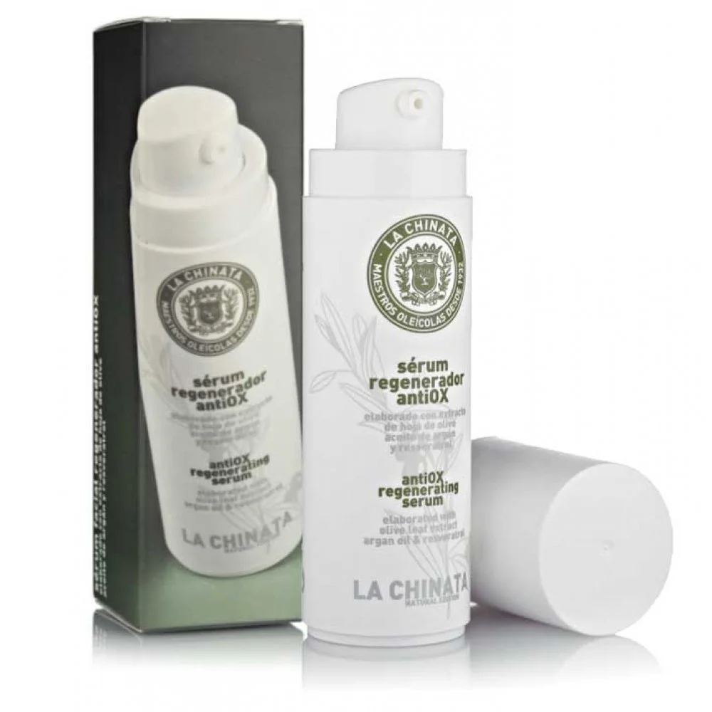

Cosmetic Made in Spain
语言
English
Spanish
聯繫我們
特殊優惠
日用品
特色食品
護膚品
La chinata抗氧化再生血清

30ml 15.0€
La Chinata抗氧化再生面部精华液具有高浓度的抗氧化活性，由于其质地，柔软轻盈，吸收迅速，它渗透到皮肤的深层，留下天鹅绒般的外观。 它含有特级初榨橄榄油、摩洛哥坚果油、白藜芦醇和橄榄提取物，使这款面部精华液成为对抗皮肤衰老的伟大盟友。 一方面，EVOO作为一种天然的保湿剂，修复皮肤的屏障功能，除了提供抗氧化和抗衰老的效果。同样地，摩洛哥坚果油可以再生、重组和调理皮肤。白藜芦醇是一种很好的抗氧化剂，橄榄叶提取物具有抗炎、抗刺激、净化、防腐和抗菌的作用。 此外，其精油的组合对皮肤产生舒缓，放松和清爽的作用。 建议在一天中的任何时间，无论是早晨还是晚上，在清洁的皮肤上使用。在任何治疗之前使用是理想的，因为精华液可以打开皮肤毛孔并深入渗透，以其丰富的资产滋养更深层次，让皮肤为治疗做好准备，从而更有效。
Vida Copyright © 2024 All rights reserved